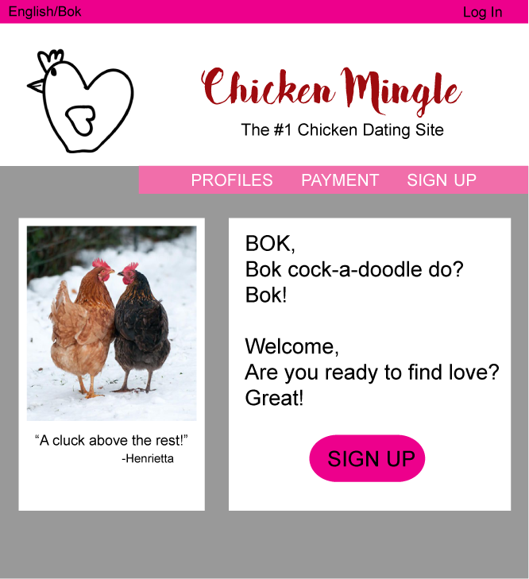

Collaborative Feedback
Your Presentation:
- Each of you were well spoken and shared enthusiastically which allowed for
you to keep the class' attention.
- Your activity was layed out in a way (linear order) that was easy to understand, and I especially liked that
you guys gave an example for us to work off of.
- I would like to have seen a bit more explaination about using collaborative feedback
in the workplace, so that I would be able to feel comfortable in the future. There
was a list of what to do when recieving feedback but not too many details of how to practically do the list.
The Chicken Mingle Site:
- The site is very colorful. In order to reduce the business of the site
I would suggest limiting the colors to 2 or 3. The pink and red colours specifically
clash because of their brightness.
- By changing the font of the title from a san serif font to a
bold decorative font it will allow the title to stand out well, and give
site header more interest.
- The alignment of the sign up button can give viewers an unprofessional
feeling. By aligning the words to the middle of the button it would allow users
to associate the "sign up" as a button and get them to click it. The centering
will also make the alignment of other texts feel more consistent.
